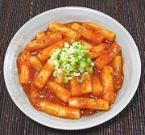

|
Spicy Rice CakesKorea - Tteokbokki | ||||
| Makes: Effort: Sched: DoAhead: |
1-3/4 # ** 1-3/4 Yes |
These are a popular snack provided by street vendors in Korea. They aren't nearly as chili hot as you might think, but they are quite chewy. Fish cake (eomuk, 4 oz) is often added with the rice cakes. | |||
|
1-1/4 4 ------ 1/3 1 1/2 ------ ar |
# c --- c T T --- |
Rice Cakes (1) Stock (2) -- Seasonings Gochujang (3) Chili Flakes (4) Sugar -- Garnish (opt) Scallions |
Note: I have cut the sugar to half what a pattern recipe calls for - adjust to your preference. Do Ahead - (1 hr)
|